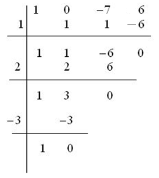

Factorización de polinomios
Un número a es la raíz del polinomio P(x), si P(a)=0.
Entonces, usando el teorema del resto, si dividimos P(x) por x – a, la división es exacta. Usando la prueba de la división: P(x) = Q(x) · (x – a). Por lo tanto, podemos descomponer el polinomio usando sus raíces, identidades notables, la ecuación de 2º grado, sacando factor común y la Regla de Ruffini
Ejemplo: descompón x3 -7x + 6

x3 -7x + 6 = (x – 1)·(x – 2)·(x + 3)
NOTA: prueba sólo los divisores del término independiente.
Ejercicio. Factoriza los siguientes polinomios:
a) x3 - 9x2 + 27x - 27
b) x4- x3 - 21x2 + 45x
c) 9x3 - 9x2 - x + 1
Soluciones: a) (x - 3)3 ; b) x·(x - 3)2 ·(x +5) ; c) 9·(x - 1)·(x + 1/3)·(x - 1/3)
Obra publicada con Licencia Creative Commons Reconocimiento No comercial Compartir igual 3.0